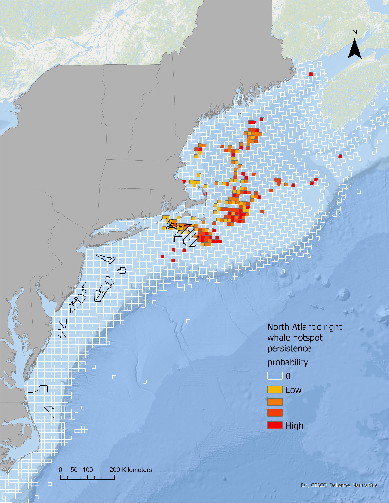

Macrofauna MAB and Shelf-wide
Trend lines are shown when slope is significantly different from 0 at the p < 0.05 level. An orange line signifies an overall positive trend, and purple signifies a negative trend. To minimize bias introduced by small sample size, no trend is fit when N < 30. Dashed lines represent mean values of time series unless the indicator is an anomaly, in which case the dashed line is equal to 0. Shaded regions indicate the past ten years. If there are no new data for 2018, the shaded region will still cover this time period.
Mid-Atlantic Bight
Surveys
NEFSC BTS & NEAMAP

Spring (left) and fall (right) surveyed biomass in the Mid-Atlantic Bight. Data from the NEFSC Bottom Trawl Survey are shown in black, with NEAMAP shown in red.
Just NEAMAP

Proportion managed species in NEFSC BTS
MAFMC Planktivores in NE
Survey Shannon Diversity

Expected number of Species


Productivity anomaly

Small fish per large fish biomass anomaly in the Mid-Atlantic Bight from BTS.

Recruitment Anomaly for Mid-Atlantic Stocks from Stock Assessments.
Condition factor

Condition factor for species sampled in MAB.
Stomach Fullness

Stomach fullness anomaly in the Mid-Atlantic Bight.
Larval diversity

Virginia Common Tern Abundance
NO NEW DATA

Estimated number of breeding pairs in Virginia barrier island/lagoon system.

Forage Index

Observed Shark Numbers
NO NEW DATA 
Shelfwide Indicators
Protected species

Estimated Harbor porpoise bycatch (black) and the potential biological removal (red).

5 year Gray Seal bycatch estimate for NEUS Shelf (Blue) and 1 Year estimate for New England (Black) and the potential biological removal (red).

Estimated North Atlanic right whale abundance on the Northeast Shelf.

Number of North Atlantic right whale calf births, 1990 - 2022.
Protected species hotspot maps


Seabirds, Turtles, Whales
Aggregate species distribution

Aggregate species distribution metrics for species in the Northeast Large Marine Ecosystem.
Forage fish energy content


HMS CPUE


Species groupings based on list from Debbie Duarte - missing Boonethead, Atlantic Angel shark, Sixgill shark, sevengill shark, nurse shark, white shark, basking shark, lemon shark.
HMS Distribution Shifts

Species distribution shifts between 2010 and 2017.